Albume foto
Galerie
17 albume din concertele, concursurile și momentele Fabricii de Pian. Alege un album și apasă pe o fotografie ca s-o vezi mare.
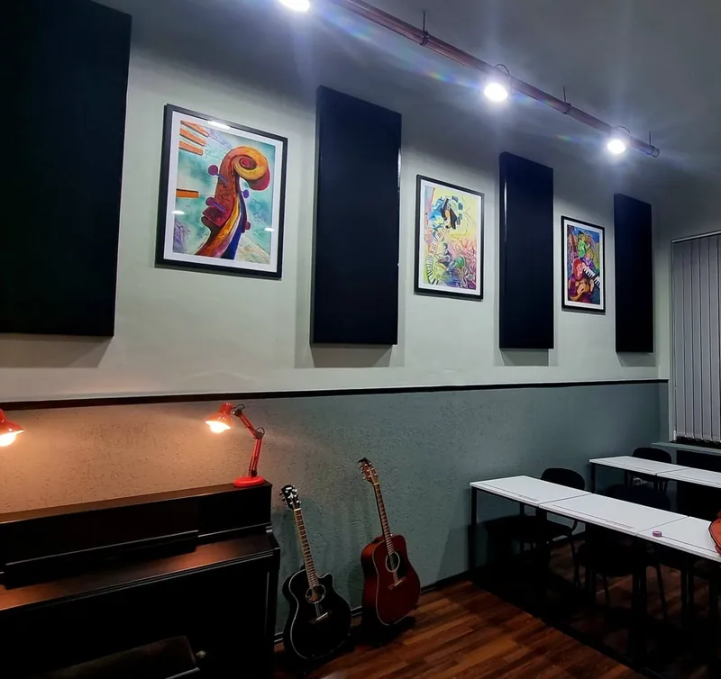
Album nou · 2022
Laboratorul de muzică „Petru Barbăroșie”
A patra piesă a Fabricii de Pian: o sală refăcută de la zero, cu lumini, mobilier și echipamente noi pentru elevii Secției de Muzică.
Vezi albumul →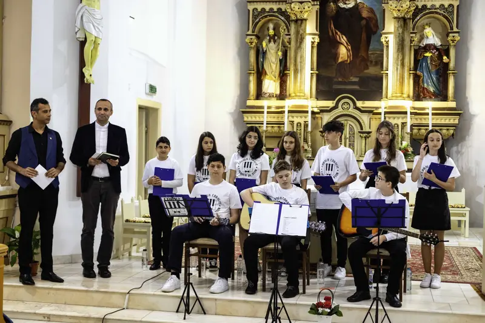
Concert Corala Coralis10 fotografii
2 iunie 2022 · Petroșani
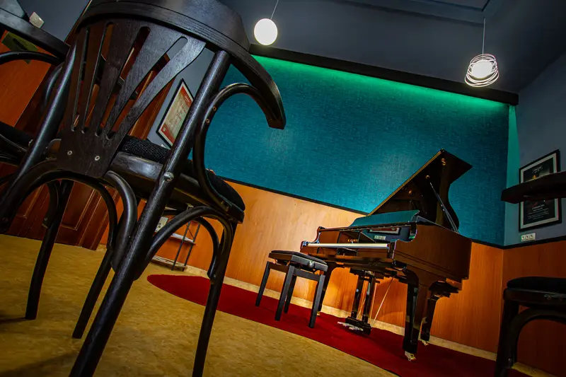
Sala de concert și pianul Kawai10 fotografii
2020 · Școala „I. G. Duca”
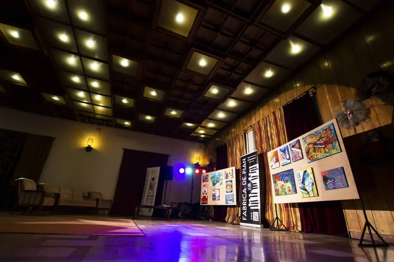
Un an de Fabrica de Pian10 fotografii
24 ianuarie 2020 · Petroșani
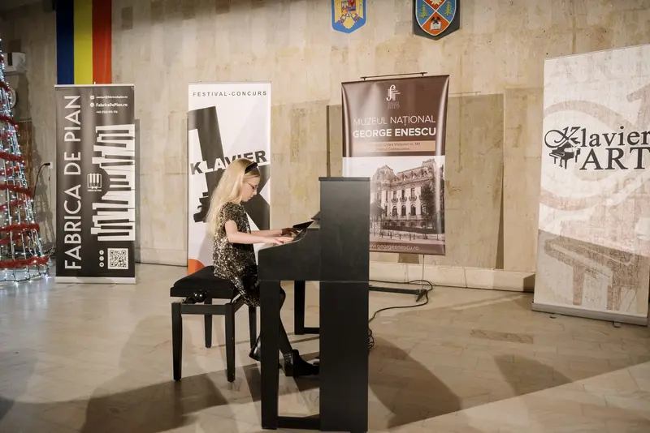
Festivalul Klavier Art 201910 fotografii
decembrie 2019 · Petroșani
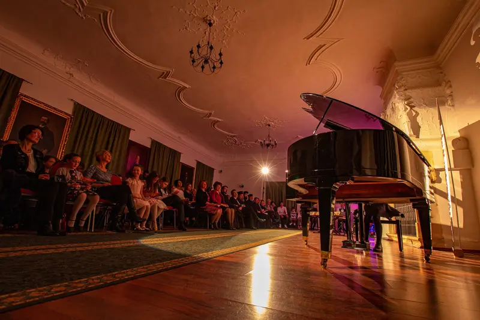
Concert „Fabrica de Pian” la Deva10 fotografii
3 decembrie 2019 · Deva
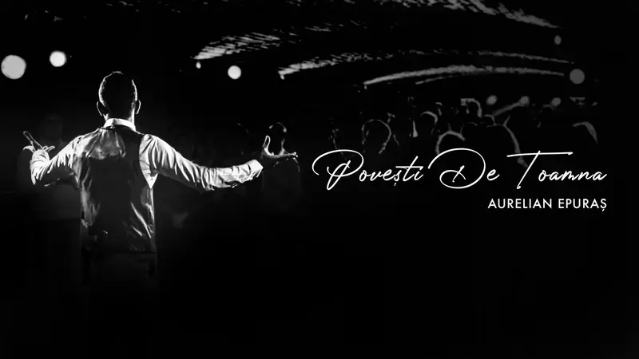
„Povești de toamnă”10 fotografii
13 noiembrie 2019 · Petroșani
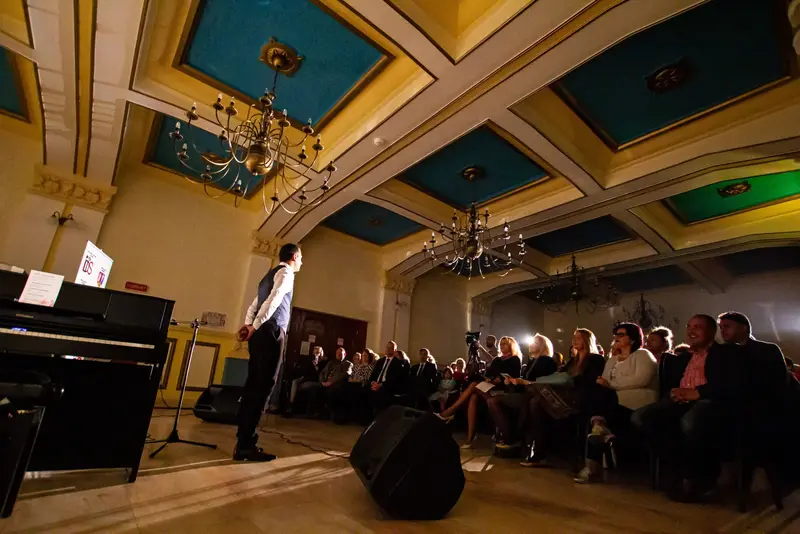
„Fabrica de Pian” la Lupeni10 fotografii
16 octombrie 2019 · Lupeni
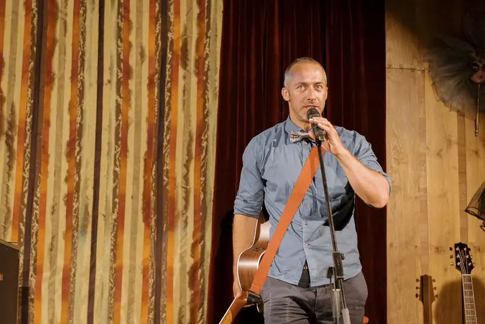
Concert Cătălin Stepa10 fotografii
17 iulie 2019 · Petroșani
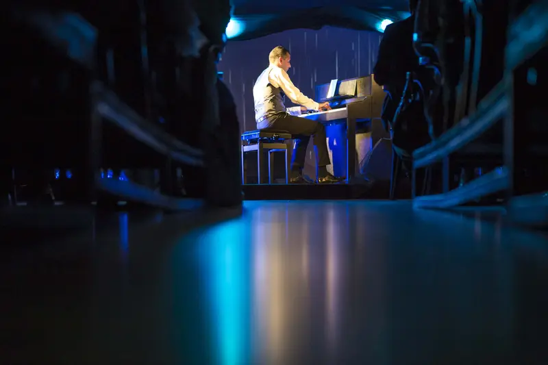
„Histoires d’Amour”10 fotografii
13 iunie 2019 · Petroșani
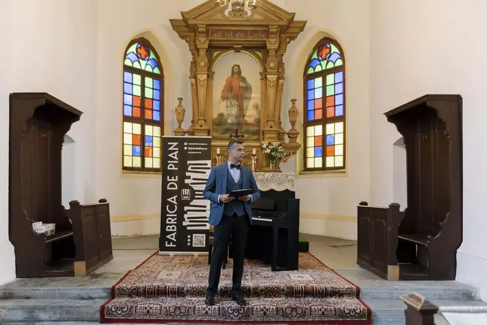
„Armonii de vară”10 fotografii
6 iunie 2019 · Petroșani
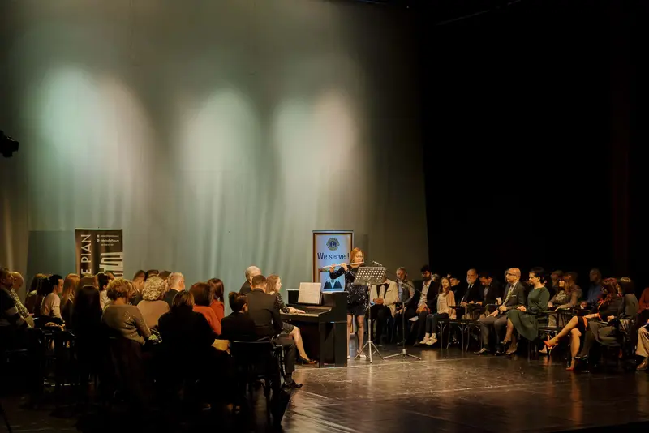
„Fleurs de Printemps”10 fotografii
31 mai 2019 · Petroșani
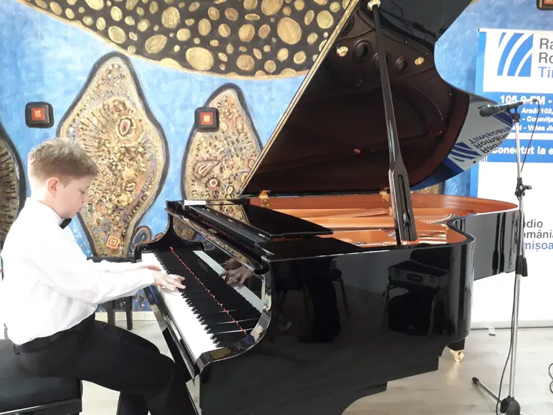
Concursul „Clara Peia”10 fotografii
19–20 aprilie 2019 · Lugoj
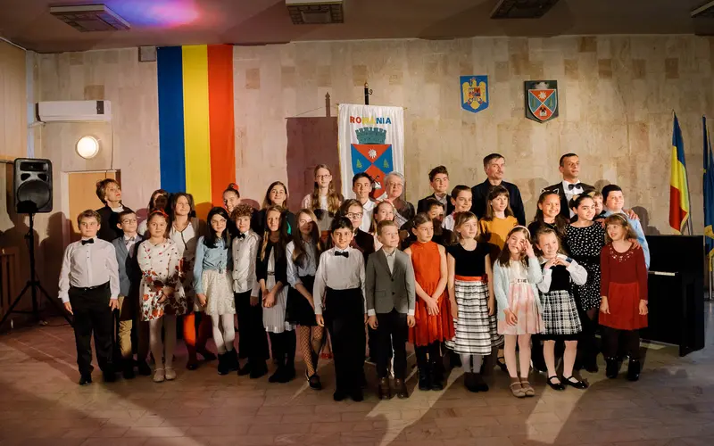
„Fabrica de Sunete”10 fotografii
3 aprilie 2019 · Petroșani
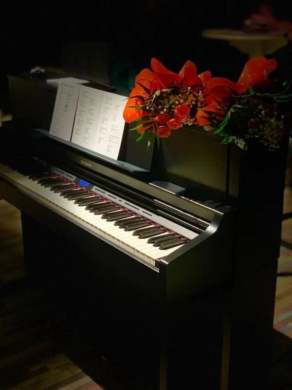
Zilele Aztek Art10 fotografii
23 februarie 2019 · Petroșani
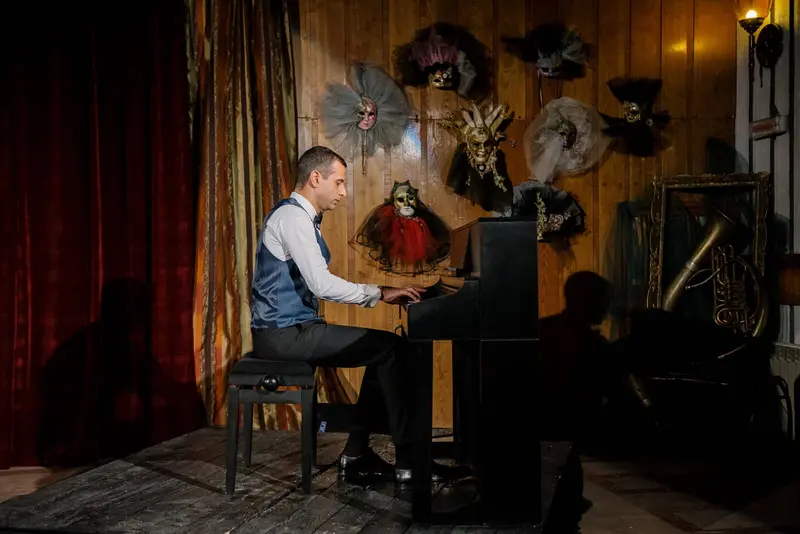
Inaugurarea proiectului10 fotografii
25 ianuarie 2019 · Petroșani
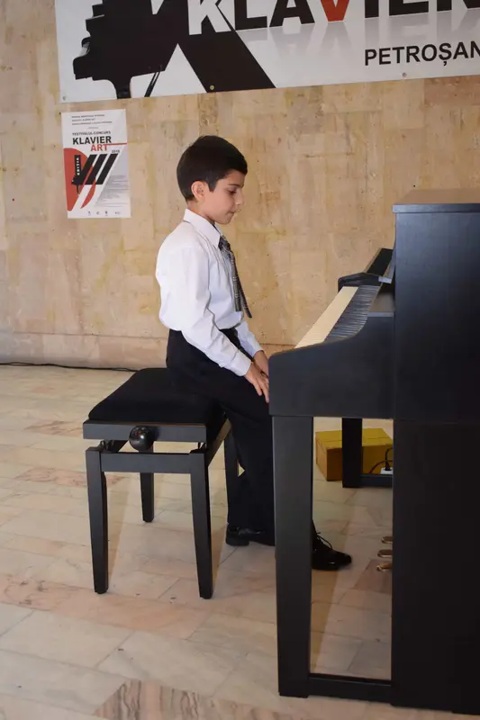
Festivalul Klavier Art 201810 fotografii
14–16 decembrie 2018 · Petroșani
Mai multe fotografii și peste 200 de clipuri video găsești pe Facebook și pe canalul de YouTube.